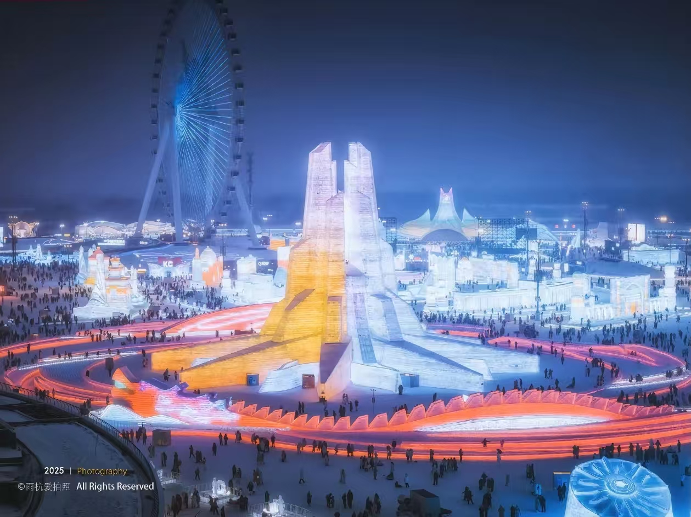
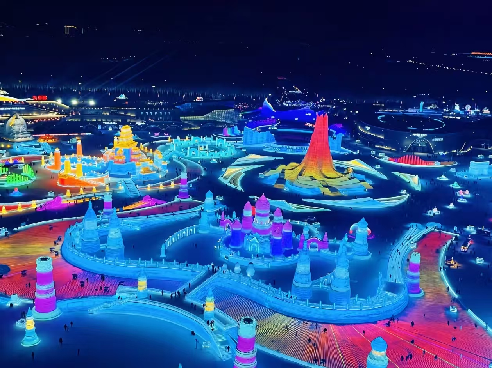
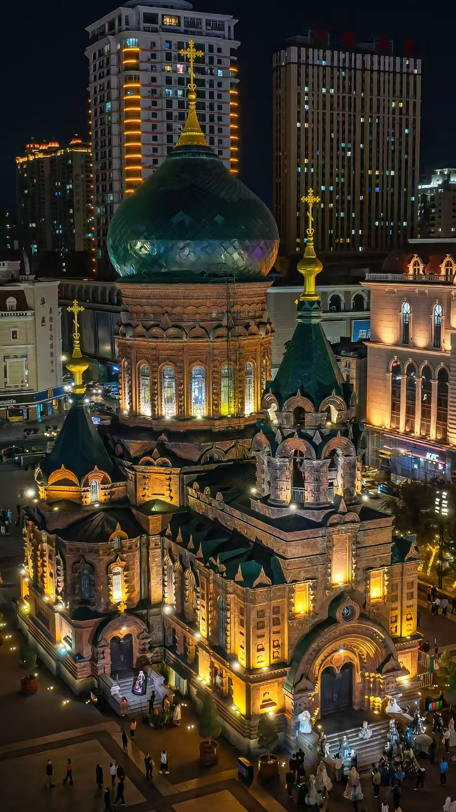
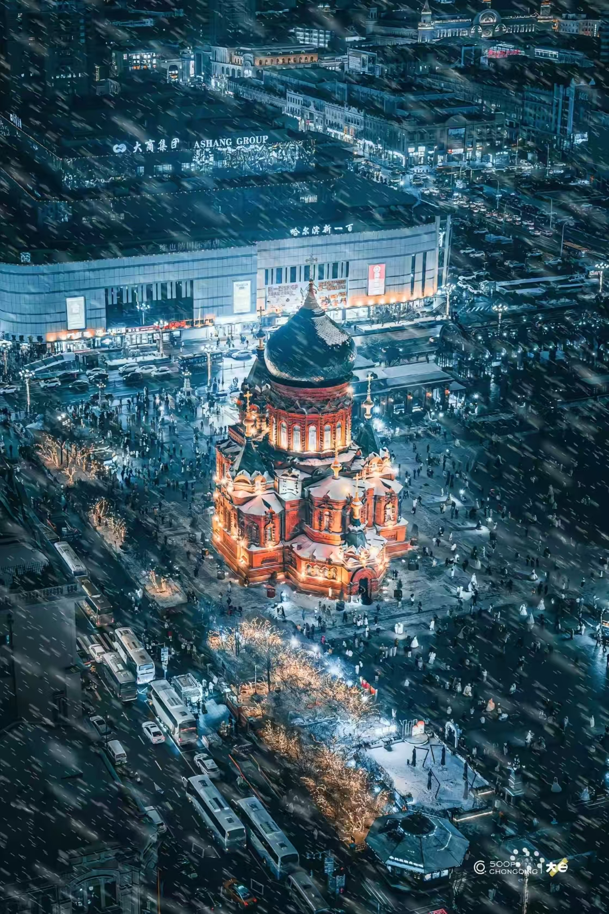
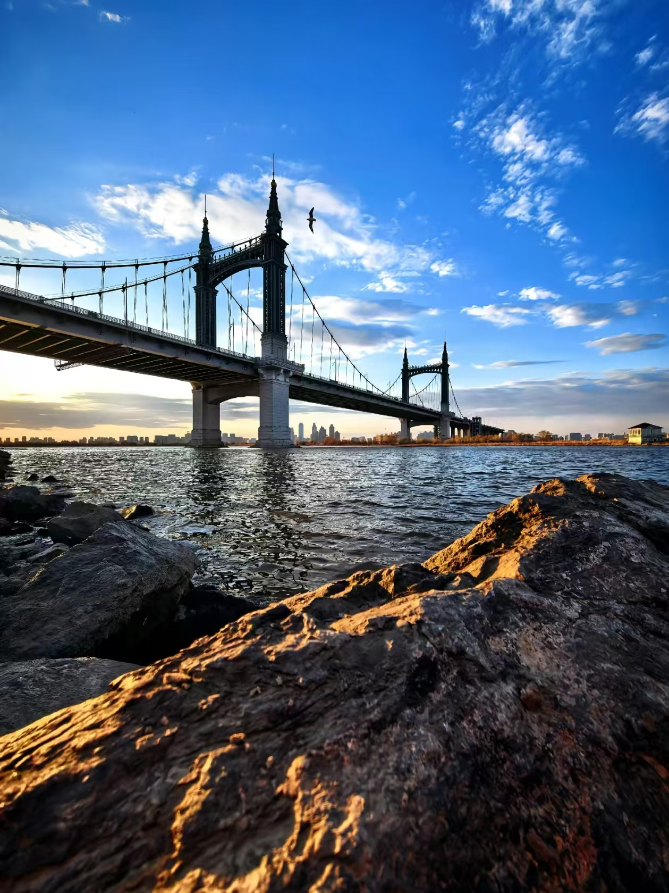

The first thing you notice in Harbin is the cold — not the kind you feel, but the kind that announces itself before you've even stepped outside. The air is dry, sharp, and completely honest about what's coming. Then you look up and see this impossible mix of Russian onion domes and neon ice castles. Harbin is a city that shouldn't make sense, but it does. It's a Russian time capsule in northeast China, and the winter carnival here is unlike anything else in the world.
The cold is brutal — we're talking -30°C — but the rewards are real. The Ice and Snow World is genuinely one of the most impressive things I've seen in China. St. Sophia Cathedral at night looks like something from a fairy tale. And the food — Russian borscht meets northeast Chinese stew — is a gift. This guide is based on two winter trips, written for foreign travelers who want to experience Harbin without freezing their fingers off or falling into tourist traps.

The Ice and Snow World at night — this is what you're here for. The scale is overwhelming and the colors are impossible to capture well on a phone.
The Ice and Snow World is the main event. Every winter, builders take millions of cubic meters of ice from the Songhua River and construct a city of light, ice and color. In the daytime it's impressive but a bit flat — at night, when the lights come on, it's genuinely jaw-dropping.
The giant ice slide has a queue of 1-2 hours during peak times. I waited 90 minutes and it was a 20-second ride. Was it worth it? Honestly... yes, but barely. The smaller slides are nearly as fun with a fraction of the wait. Go at 4pm, see the transition from daylight to neon, and leave by 8pm. Your hands will thank you.
Don't stay for more than 4 hours. Even with full winter gear, the cold will affect your judgment and body. 3-4 hours is the sweet spot for photos and slides. Book tickets on Trip.com in advance (298 RMB).

St. Sophia at night — a Russian Orthodox church built in 1907, now a museum.
Built in 1907, St. Sophia is Harbin's most recognizable landmark. The green onion dome and red brick exterior are spectacular, especially at night when floodlit from below. The building is a museum now — you can go inside for 20 RMB, but the interior is largely stripped. I'd say spend your money on the exterior view instead.
There's a square in front where locals feed pigeons, which makes for great photos. Go early (before 9am) to avoid the tour groups. By 10am you'll be competing for space with dozens of busloads of Chinese tourists.

A snowy aerial view of St. Sophia — the contrast between red brick and white snow is breathtaking.
Central Street (Zhongyang Dajie) is Harbin's main tourist drag, a mile-long pedestrian avenue lined with early 20th-century Russian buildings. It's beautiful to walk, but the restaurants and shops are overpriced and the crowds can be exhausting. Walk it once, take your photos, then move on.
The exceptions: the Madiel ice cream is the real deal — 5 RMB per stick, and it somehow tastes better at -20°C. And the Huamei Western Restaurant (No. 112 Central Street) is one of China's four original Western restaurants, dating back to 1925. The Russian-style borscht and beef stew are excellent, though the service is slow and the prices are stiff.

The Songhua River bridge on a winter day — the river freezes solid from December to March.
The Songhua River is the heart of Harbin's winter. When it freezes completely, it becomes a public playground. You can walk, skate, rent a sled, or just stand in the middle and watch the sunset over the suspension bridge. The Binzhou Railway Bridge (built in 1901) is now a pedestrian walkway and offers one of the best views of the city.
Ignore the "black cabs" at the airport or train station. They'll charge you 3x the normal price. Use DiDi or the official airport bus (20 RMB). Also, Central Street restaurants are overpriced — walk 10 minutes into the side streets for authentic food at half the cost.
Harbin has the most distinctive food scene in northern China because of the Russian influence. You'll find things here that don't exist anywhere else in the country.
Harbin's signature dish — pork slices battered and fried twice with a sweet and sour sauce. It's lighter, crispier and more refined than typical sweet and sour pork. Best at Lao Chang Chun Bing (multiple locations). Budget 40-60 RMB.
Borscht, beef stew, fried salmon, potato salad. Huamei Western Restaurant on Central Street is the historic choice (No. 112). Expect 100-150 RMB per person.
5 RMB per stick. Eat it at -20°C — the cold makes the texture denser and the flavor stronger. It's a bizarrely wonderful experience.
Iron pot stew with pork ribs, chicken, or fish, plus potatoes, corn, and flatbread baked on the side. It's the perfect winter meal. Go to Shanhetun Tieguo Dun. Budget 60-80 RMB per person.
Harbin has aggressive central heating. Every building is 22-24°C. The moment you walk inside, take off your coat, hat, and gloves. If you don't, you'll sweat, then go back outside and freeze. The locals know this. You'll learn it after one day.
Three to four days is ideal. Here's the itinerary I'd do if I had to do it again.
Day 1: Central Street → St. Sophia Cathedral → Songhua River ice. Walk the mile-long Russian pedestrian avenue. Cathedral entry is 20 RMB. On the frozen river, sled, skate, or ride a horse-drawn cart (50-100 RMB).
Day 2: Ice and Snow World (enter after 4pm). Main event: ice castles, giant slides, neon lights. Book tickets in advance. Limit your time to 3-4 hours max.
Day 3: Sun Island → Siberian Tiger Park → Old Daowai. Sun Island Snow Expo (30 RMB). Tiger Park (110 RMB). Old Daowai is the preserved Chinese-Baroque district, much quieter than Central Street.
Day 4 (Optional): Yabuli Skiing → Hot Springs. Professional ski resort. Expect 300-500 RMB for ski pass + instructor. The hot springs afterward are non-negotiable.
December to February is peak ice season. Mid-January to early February has the most solid ice and best light shows. March is a compromise — the ice starts to melt but crowds are thinner and temperatures are slightly milder (-5°C to -10°C).